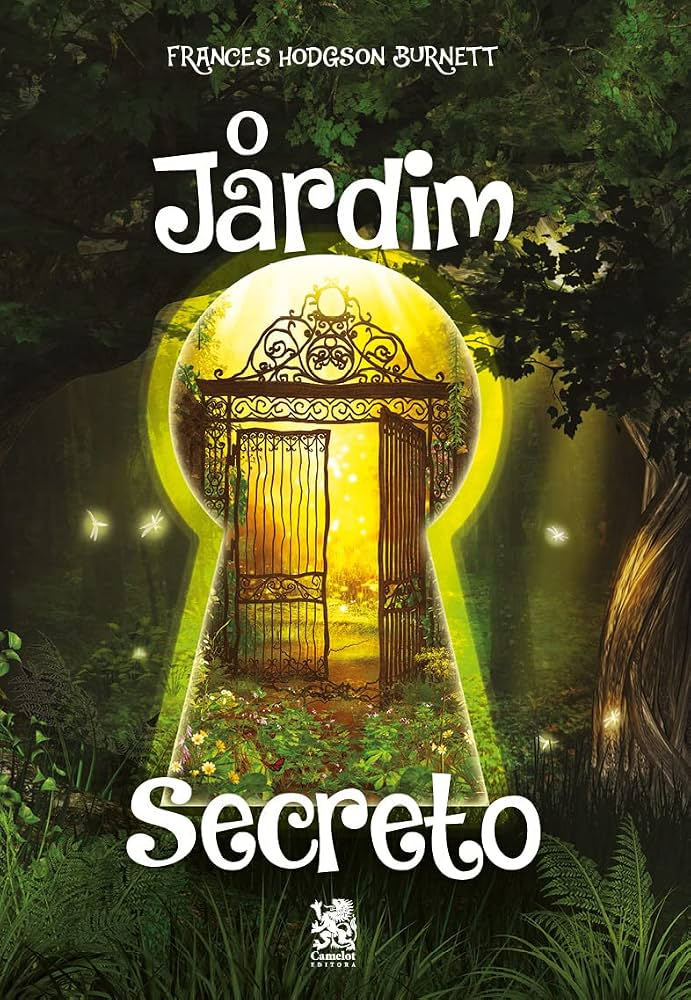

O Jardim Secreto
Sinopse
"O Jardim Secreto", clássico da literatura infantojuvenil publicado em 1911 por Frances Hodgson
Burnett, conta a história de Mary Lennox, uma menina mimada e solitária nascida na Índia. Após
perder os pais em uma epidemia de cólera, ela é enviada para viver na Inglaterra com seu tio
recluso, o Sr. Archibald Craven, em uma enorme e misteriosa mansão cercada por pântanos.
No início, Mary odeia a nova vida, mas tudo muda quando ela descobre a existência de um jardim trancado
há dez anos, cuja chave foi enterrada após a morte da esposa de seu tio. Com a ajuda de uma ave (um
rouxinol) e de Dickon, um menino local que conversa com os animais, Mary encontra a chave e decide reviver
o jardim em segredo, transformando não apenas a natureza ao seu redor, mas também o seu próprio temperamento
amargo.
A transformação se completa quando Mary descobre outro segredo na mansão: seu primo Colin, um garoto hipocondríaco
que vive trancado em um quarto acreditando que vai morrer. Mary o leva para o jardim secreto e, junto com Dickon,
as crianças descobrem o poder da amizade e da natureza, operando um verdadeiro milagre de cura e reconciliação
familiar.